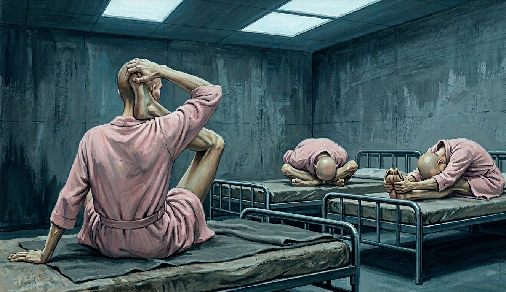
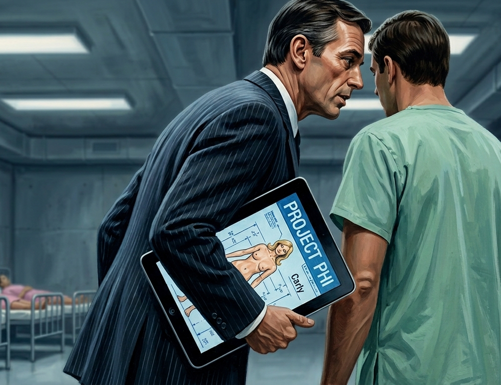

"Very well. Let's get started."
Vane’s words hung in the antiseptic air of the concrete room. For a moment, nothing happened, all six of them watching Vane, and for one clean second Charlie thought: okay, we'll get through this, whatever this is, we'll get through it.
Then the door opened and six orderlies in medical scrubs entered, the last one pushing a rolling cart bearing six large syringes on the upper tray. Below them, folded and ready, a stack of nylon restraint straps.
Vane picked one of the syringes and held it up to the light. The amber fluid inside moved slowly, almost thickly, filtering the fluorescent wash.
Austin came off his cot before Charlie had finished processing what Vane was holding. He was fast, athlete fast, and Charlie watched him cross the room and thought: okay, and then thought, it won't be enough, and then Austin had his hands on Vane's collar and for one second Charlie believed he’d been wrong.
Vane stepped back. Something resembling fear moved through his face, quick and involuntary, gone before it finished arriving. His hand went to his lapel, finding Austin's wrist.
Two orderlies hit Austin from the sides, the third a half-beat later from behind. The arithmetic changed instantly and completely. Austin took the first impact and kept moving, took the second and stayed upright, and then the floor was involved and so were his wrists and his jaw against the concrete and a sound from his throat that had started as a low growl and ended as nothing because one of the orderlies had a knee in the middle of his back. Whatever options they'd been quietly carrying since they woke up in this room, there was now one fewer.
The orderlies had him strapped in under a minute and were adding the gag before Austin had finished cursing. He kept fighting the restraints anyway, the cot creaking under him, his eyes on Vane the whole time with a look that unambiguously meant I will kill you when I get out of this.
Vane had taken one step backward. That was all. He straightened his collar and looked at Austin the way you looked at something that had wasted thirty seconds of your time.
"Anyone else?" Vane said, looking away to survey the other five.
He picked up his tablet, checked something, and looked at the room. The orderlies had fanned out, one beside each remaining cot.
Jay was already on his feet, hands up. "Hey. Listen. My dad is Michael Furst. He can make this worth your while—" The orderly didn't slow. Jay swung, got his forearm caught mid-motion, and was on the cot and strapped before he'd finished the sentence.
Hal had gone for the door while Jay was still arguing. He got three steps, ran into an orderly who hadn't needed to hurry, and was redirected to his cot in a single motion. He kept fighting, all leverage and no room, the orderly's weight making the arithmetic impossible.
Peter sat very still on his cot with his glasses folded in his hand. He was watching the orderly beside him and working through what he could see: Austin down, Jay down, Hal pinned, the door twenty feet away with three of them between it and him. He looked at the orderly. "I won't fight," he said. "I just want it on record that I'm not consenting to this."
"I’ll be sure to notify the ethics board," Vane replied.
Toad hadn't moved from his cot. He'd been watching everything with the unhurried attention of someone keeping score, and when the orderly beside him reached for his arm, he pulled it back. He looked at Austin, jaw against the cot frame, still fighting the gag. At Hal, pinned and trying. At Jay staring at the ceiling. Then he simply closed his eyes and reclined back onto his cot while an orderly strapped him down.
Vane stood at the center of the room with his tablet, confirming that each of the six were immobile and strapped to their cots. He then excused the orderlies and waited until they had exited before continuing.
"You should consider yourselves fortunate. You are helping expand the frontiers of medical science." He held one of the syringes up again, the amber fluid inside swirling menacingly. "A broad-spectrum tissue regeneration therapy. Significant results in lower primate subjects. Tolerance in humans is to be determined."
Pulling on a pair of latex gloves, Vane moved to the closest cot, which happened to be Hal’s.
"Harold Mercer." He scrolled. "3.9 GPA." A pause. "You run seven anonymous Twitter and Reddit accounts that publish personal information about students you dislike." He glanced up. "You've been doing it since sophomore year of high school."
"How did you—" Hal looked around the room at the others and found Peter's eyes, his head shaking with disapproval. Hal couldn't hold his gaze. He looked back at Vane, and a realization hit him.
"Cade," Hal said. "He handed you all of this, didn't he. You don’t have to be his puppet. We all saw how he treats you. You're too smart to be running his errands. You don't have to—"
For a brief moment, something approaching anger flared in Vane's eyes. Then he picked up the first syringe and crossed to Hal's cot. Grabbing his arm, Vane pushed the needle in hard.
"I am," he said flatly, "exactly where I want to be."
Vane drove the plunger down in one deliberate push and stepped back, breathing. He looked around the room, making sure each of them was watching.
Hal had stopped talking and was staring at the injection site, his eyes tracking slowly up his own arm as Vane withdrew the needle and moved on.
Vane was already reading the next dossier.
"Jayden Furst." He glanced up. "President, freshman class."
"Don't you touch me." Jay was already pulling at the straps, the cot shifting. "Don't — I'm serious, I'll scream, I'll scream so loud they'll hear it outside this building, I swear to God I will—"
He didn't get the chance to scream before the needle went in mid-sentence and his voice stopped. Jay finished the breath in silence, staring at the ceiling.
Vane proceeded on. “Austin Bryce.” “Peter Lankford.” For each, he revealed enough from his tablet to demonstrate that Cade had been watching them since the coffeehouse incident in the fall. Then the needle. Vane didn't hurry and didn't linger.
“Charlie Wright.”
Charlie's dossier was brief. He watched Vane set the tablet down and pick up the syringe and had one clear thought — I should have closed my laptop — and then Vane's hand was on his arm, thumb pressing into the crook of his elbow, finding the vein, and the needle went in.
Sharp and immediately deep: a pressure that resolved into a weight, and then, right behind it, the cold. Not the cold of winter on skin. Something in the bloodstream itself, moving with it, already traveling up the length of his forearm. He pressed his wrist against the cot frame, which did nothing. The cold moved through his upper arm on its own schedule, following its own route, indifferent to whether he'd gone rigid or was holding his breath. He looked at the entry point. A small raised mark, the skin pinkening around it, the surface record of something already past the surface, already inside him and going where it was going. His fingers moved. He hadn't asked them to.
The cold passed his shoulder and kept moving, spreading into his chest in a thin branching line, following something — the architecture of his own circulatory system, paths he'd never had reason to know — toward the center of him. It reached his sternum and paused there, and settled, and sat.
"Porter McCann," Vane announced.
A soft murmur moved through the room. Charlie looked at Peter, then at Austin. Jay and Hal exchanged confused glances.
“There’s no one here named—” Charlie began.
“Present,” Toad said without opening his eyes.
Five heads turned. Toad turned his head enough to look at Vane, then at the other five, then back at Vane.
"Nobody's called me that since fourth grade."
"Indeed,” Vane replied. “I suspect that someone with a 1600 SAT who also received a D-minus in Introduction to Statistics might wish to use an alias."
"Didn't feel like going," Toad shrugged.
"No matter." Vane waved it away. “You will be known by your birth name, at least during this phase of the trial.” He administered the final injection and turned to leave, but not before loosening Austin’s gag.
Austin pulled in a breath. "Seven of them," he said. "It took seven of them. Remember that number." He looked at Vane. "When this is over, it's going to be one on one."
"Many people have said similar things," Vane said. "Rest as much as you can. The next few days will be critical."
Vane snapped off his gloves and pressed them into the hands of an incoming orderly as he passed through the door. The orderlies spread through the room and began working the restraints free.
The orderly at Charlie's cot worked the wrist strap free and moved to his ankles. Charlie sat up and rubbed at the red mark the nylon had left.
"Please," he said. "My name is Charlie Wright. I'm a student at Hartwell University. We were taken here against our will — you have to get us out of here."
The orderly looked up from the ankle strap like he’d been expecting this.
"Please, just call someone — campus police, the regular police, anyone — and tell them where we are, that's all it would take. That's all we need."
"Doctor Vane mentioned you'd probably say something like this," the orderly said as he freed the ankle and straightened. "He said to expect it from all of you."
"He would say that," Charlie said. "That's exactly what he'd—"
"We don't want to be here!" Jay said from across the room.
"You should've thought about that before getting yourself hooked on heroin,” said a second orderly. "Your families just want what’s best for you. You’ll get through it and you’ll see them soon enough."
"Our families didn't ask for this! Just call my father and—"
"No outside contact in the first phase. That's standard."
"Does any of this look standard to you?" Hal said.
The orderly surveyed the room and turned back to Hal unmoved. "I’ve seen worse," he said. "It's going to get harder before it gets better. Try to rest."
The door closed, and it was just six boys and the ventilation and whatever was moving through their arms.
The presence in Charlie’s chest settled into something that just sat there, deep and inert and patient, like something that had arrived and intended to stay. His hands were shaking. He pressed them flat against the cot.
"Is anyone else's chest—"
"Yes," said three voices, simultaneously.
Whatever halting talk remained died out as the presence in their chests settled into something heavier. Charlie closed his eyes and tried to sleep and couldn't.
The nausea arrived without warning. He fixed his eyes on the ceiling and breathed through his nose, which just made it worse. His stomach contracted against something that wasn't there, not emptiness, something more specific: a deep interior revolt, his body finding something it didn't recognize and trying to expel it through every available route simultaneously. He held on for five minutes and then another five and then stopped counting because it wasn't stabilizing, it was cycling, building and receding on a schedule that had nothing to do with anything he'd done to himself.
Jay gave in first, over the side of his cot, the contents of his stomach splattering wetly against the concrete. The sound made Charlie's own stomach contract harder. He swallowed and looked at the ceiling.
Within minutes, the orderlies returned and placed basins next to them and the boys managed to make it into the basins more than they didn’t, but after a while it didn’t matter anymore.
He became aware of the sweat sometime during the night, the way you became aware of something that had been building while you were occupied elsewhere. It wasn't the sweat of fever or effort. It sat on his skin heavier, with a slickness that didn't evaporate, and when he pressed his forearm against his face it left a film there, faintly rancid, a smell that was his own smell and also wasn't. When he pulled his arm away the skin felt lighter than it should have, thinner against the bone, something shifted in the ratio of what was underneath it. He wiped his palm down his arm and the skin felt slick under his hand, like something rendered rather than perspired.
"Something is coming out of my skin," Toad said.
"Mine too," Charlie said.
A pause. "Like, out of my skin."
"Yeah."
Toad considered the ceiling. "That's pretty bad."
"The volume isn't right," Peter said from across the room, staring into his basin.
"I swear to God, if you don’t—" Hal said, and was immediately sick agian himself.
"I mean medically," Peter said, wiping his mouth on his sleeve. "We haven't eaten in probably eighteen hours. There wasn't this much in me. We should be dry heaving by now."
“Lucky us,” Jay managed, trying not to gag.
"No, I’m saying this shouldn’t be possible. Unless… unless the compound is breaking down our body tissue — fat, muscle — and the body is treating it as waste. It has to go somewhere." A pause. "It's going everywhere it can."
"Thank you, Peter," Austin grumbled. "Very helpful."
"It's all the same process," Peter said. "The body is breaking itself down."
“So we’re sweating… ourselves out?” Charlie asked, but no one had an answer.
They realized too late that there was no toilet in the room, but by the time they needed one none of them would have had the strength to reach it in time. They soiled themselves and they each knew it and nobody said anything as the stench filled their nostrils.
The orderlies stripped them somewhere in the next few hours, washed them — Charlie had never been so grateful to be naked in his life — their ruined street clothes gone, replaced with a hospital gown and a diaper. The orderlies cycled through regularly after that, changing them when they needed changing.
At some point during what felt like the second month of the fever but was probably only the second day, Hal said: "I'm going to fucking kill Vane."
"Get in line," Austin said. He sounded terrible.
"You can have Vane, I want Cade,” Jay said. “This is nuts. We said some shit in a group chat. Who does this to people over a group chat?"
"Fucking billionaires," Hal groaned. "Money like that breaks your brain. He just — he could make it this bad, so it's this bad."
Then nobody said anything for a while, because there wasn't the energy for it.
The ceiling shifted over Charlie. He lay in the hot fluorescent light and the compound worked in his blood and he had a sense, somewhere beneath the fever's logic, of his body doing something large and irreversible, of processes running without him that he couldn't interrupt or slow. It felt less like being sick than like being edited. He couldn't tell what was being taken.
Then the fever went into his bones.
It came on all at once — every joint in his body simultaneously, from his jaw to his ankles — a heat that wasn't the surface heat of the fever but something interior, deep in the cartilage and the connective tissue, as if the compound had found its way into the ligaments themselves and was burning through them. He moved his arm and felt his shoulder give in a way that made him go cold despite the fever. Not snap, not grind. Release. Like the thing holding the joint together had given up entirely.
He lay still. No. He tried to lie still. Every shift found new wrongness. His hips spread against the cot with a slow, incremental pressure he couldn't halt, his knees settling into angles they'd never found before, his spine losing the architecture it had always held. His body felt like it was coming unmoored from its own structure, nineteen years of sinew and geometry releasing all at once, the framework that had held him upright and intact deciding, without consulting him, to let go.
Charlie’s bones themselves felt wrong in a way he had no words for. Not breaking. Malleable. A deep interior give, as if the material that had been solid and permanent become something that could be worked. He pressed his palms against his forearms and felt them solid and also not, as if made of sculptor’s clay.
The outward pressure in his pelvis was the worst of it. Slow and constant and irresistible, a force pushing from inside the bowl of his hips in every direction at once. He pressed his hands flat against his hip bones and lay there and felt the pressure working against his palms and felt nothing he could stop or slow or interrupt. Something was being decided in the deep structure of him while the fever ran its cover over everything else.
"Porter," Hal said out of nowhere, breaking through the fog of fever and discomfort. “Hey, Porter. Heyyyy, Porter.”
Toad turned his head slightly in Hal’s direction.
“Just checking if you answer to it.”
Toad’s heavy-lidded eyes flared with anger. "Call me that again and when I can stand up again I will—"
"Relax," Hal said. "It's just a name, don’t get your panties in a twist."
Toad looked at him for a moment. Then he ran out of the energy to stay angry and looked back at the ceiling.
The fever climbed past the place where you could track it, and time stopped behaving like itself. The boys surfaced and submerged without pattern. A fragment of something Hal was saying, a long stretch of the ventilation's hum, Charlie’s voice asking for water that wasn't there. Morning and night and the time in between all identical, collapsing into one long sustained trauma.
Peter was reciting something at some point, low and systematic, running on and then cutting off somewhere else, like a needle lifting and resetting. Jay explaining a nonsensical escape plan in exhaustive detail — a sequence of calls his father would make that would result in extraction within forty-eight hours — the logic of it growing stranger as it ran, until it had reduced to just the word extraction, repeated endlessly. Hal was arguing with someone, or himself, the words too tangled to follow. At some point there was crying from across the room in the general vicinity of Austin, steady, going on for a while.
Toad ended up on the floor at some point. Charlie looked over the edge of his cot and found him on his back between the two rows, one arm folded under his head, looking up at the underside of Charlie's cot.
"Toad."
"Yeah."
"How long have you been down there."
"Don't know."
"You okay?"
"No," Toad said. "You?"
"No."
Charlie closed his eyes. He ran a hand through his sweaty hair and it came away easier than it should have, a clump of it tangled between his fingers, dark and damp. He stared at it for a long moment, a coherent piece of him sitting in his palm, and set his hand down over the cot’s edge where he couldn't see it, and looked at the ceiling.
Great. Now I’m going bald.
The fever broke sometime in what felt like the fourth morning, though none of them could say for sure. They understood this first because the ceiling had stopped moving, and then because the heat in their chests had gone from bone-deep to only surface-deep, and then because Hal's voice, from across the room, said: "I think it's over."
"Define over," Jay said.
"I'm not actively dying."
"Same," Toad said.
Their voices were wrong, all of them reduced to a raw scrape barely above a whisper. Charlie tried to sit up and discovered he couldn’t. His arms were there. The strength behind them was not. He got his elbows under him and pushed and the cot shifted under him and he got approximately to forty-five degrees before his arms decided they were done and put him back down. He lay there looking at the ceiling and waited.
"Can anyone get up," he said.
Sounds from each of the cots. No one could.
He tried again. Same result. He rolled to his side and got his feet to the floor and pushed to sitting that way, which worked, and sat on the edge of his cot and breathed. He pressed his palm flat to his scalp and felt the skin beneath, and looked down to find his pillow covered with a mat of shed hair.
"I can't get my legs under me," Jay said flatly. "I'm trying. They're not — it's not working."
"Nerve damage," Peter said.
He was sitting mostly upright, glasses on after the fifth try, his hands clumsy and not responding exactly how he wanted them to. His hands were in his lap and he was turning them over, one and then the other — palm up, palm down, palm up — with the focused attention of someone checking their work. The tendons stood out in his wrists more than they should. Charlie could see the architecture of each finger clearly, the joints more present, the skin sitting closer to what was underneath. Peter turned his hands over again. He pressed one thumb into the opposite palm and as if watching the signal travel. He put his hands flat on his thighs and looked at the door.
"The injection. It caused a massive autoimmune response — the wasting would have — it's the nervous system." He looked up. "I can feel my hands. I can't make them do what I tell them."
Austin was on the floor. Charlie hadn't seen him go down. He was on his hands and knees beside his cot, jaw set, and he was trying to push to standing. He got to one knee, held it, and pushed, and his legs didn't answer. He stayed there and breathed and tried again. Same wall. The signal went out and stopped at the knee like there was nothing on the other side.
"Austin," Charlie said.
Austin didn't look at him. He tried again. Same result.
"It's nerve damage," Peter said. "It's not going to respond to—"
"I know what nerve damage is," One knee on the floor. Pushing. His legs doing nothing. Not weakness — he'd pushed through weakness before — but absence. He stayed on one knee for a long moment and then tried again anyway.
"Is it temporary?" Hal asked.
"I don't know," Peter said.
The room was quiet for a moment.
"It's probably temporary," Hal said, the way you said things you needed to be true.
The orderlies arrived in force, six of them, plus two more in the corridor with new bedding. They stripped the cots, removed the gowns and diapers, and carried them one at a time through the door. Charlie's orderly had him under the arms, efficient and impersonal. His feet dragged.
The shower room was small and institutional. The orderly sat him in a metal chair under the showerhead and ran the water and Charlie let himself enjoy the thirty seconds of that before the scrubbing began. A brush working the exudate off his skin in long strokes, the gray film lifting and spiraling away. His skin underneath was unfamiliar. Not raw. Just bare, more surface than he was used to, more exposed to the temperature of the air and the pressure of the water.
Charlie looked down at his forearm where it rested against his thigh and didn't recognize it. The skin followed the bone too closely, the line of the ulna present in a troubling way, the wrist joint sharp at the end of it. He reached around his left wrist with his right hand, thumb finding middle finger on the far side with room to spare. He turned the wrist once under his grip and felt the bones shift with almost nothing between them and his fingers.
He looked away just in time to watch the last of his hair circle the drain.
Not strands. Not what the fever had loosened and the pillow had taken. The brushes the orderly used were thorough, and what came away in them was the rest of it — his eyebrows, his leg hair, the sparse remnants from days of loss — and the skin that was left behind was bare and absolute, smooth under the fluorescent light, not a shadow of anything remaining.
The orderly toweled him off and held out a robe.
"There you go, princess."
It was thick cotton, pale pink, warm from wherever it had been stored. Charlie got his arms in and the orderly tied it in front of him because his hands weren't managing the loops, and then he was carried back to the cot, which had been remade with clean coverings.
The new mattress was softer than the one that had been stripped, and Charlie registered this as a small mercy before realizing he couldn't get comfortable on it. He'd slept on his back his entire life, but something about lying flat now felt wrong in a way he couldn't fix by adjusting. His lower back didn't meet the mattress the way it always had. There was a gap there, his hips tipping forward and pulling the small of his back up off the surface, his weight going somewhere unfamiliar. Like a chair adjusted for someone else's body. He shifted and shifted again and finally rolled onto his side, which he never did, and his body accepted it immediately.
Not that he was comfortable there either. On his side, his hip bone pressed into the mattress hard, sharp and insistent, the point of contact digging in a way it never had before, which Charlie attributed to the fact that the fever had stripped him of any cushioning. He looked down and his hip was jutting upward against the narrowed line of his waist, his pelvis cocked out sideways, too much of it, too prominent, not how he was supposed to be put together.
An orderly pressed a needle into the crook of his arm and taped it flat. As the IV fluids moved into him he came back to himself in increments. The press of the cot beneath him, the flat fluorescent light overhead, and then the rest of them: six cots, six boys in pale pink, all bare-skulled, eyebrow-less. Six faces, stripped of their ordinary framing, looked like something you weren't supposed to see. Like a word with all the vowels removed.
Where the robes left skin visible he saw the same disturbing thinness he’d found in himself: Jay’s collarbones sharp above the neckline, Peter’s wrists coming out of the cuffs too narrow, the tendons and knuckles of Hal's hands standing out where they rested on his thighs. Toad had his knees drawn up and the robe had fallen open past them, his shins thin enough that the light caught the bone at the crest of each.
Looking at them, Charlie thought: there's almost nothing left of us. They'd been taken apart down to what was load-bearing, and maybe some of that removed as well.
"Love the outfits," Hal said, his voice still a raw scrape. "Very spa."
Charlie laughed and it wasn’t his laugh.
He’d gotten used to the scrape by now, the vocal rawness the fever and dehydration had caused. But this was different. As the IV worked and fluids flowed into him and his voice came back toward usable, the sound came from somewhere he didn't recognize. Not his throat. Or his throat, but shallower in it, higher up, the resonance that had always lived in his chest simply not there anymore. He'd never been aware of it before, that depth, the way sound had always filled the cavity of his ribs on its way out. Now there was no filling. The laugh arrived and was gone, light and clean and sourceless, and the silence it left behind felt different than silence usually felt.
"Fever," Peter said from the next cot. His voice sounded thinner too. “It must’ve been the fever. Inflammatory damage to the vocal cords."
"You two could do voices for a cartoon."
"Shut up, Toad," Peter said.
"I'm just saying."
“I said shut— wait, are you meditating?”
Toad was sitting cross-legged on his cot with his eyes closed, his wrists resting on his knees.
"Trying to."
As the others watched, Toad exhaled and folded himself forward from the cross-legged position slowly, reaching toward the cot. And kept going. And going. His chest dropping, his forehead heading toward the mattress, his whole torso folding down with an ease that had no business existing, and he stopped with his forehead resting between his knees and his palms flat on the cot on either side of him.
"Huh," he said into the bedding. “Not usually this bendy.”
Jay, his legs outstretched in front of him on his cot, reached forward toward his feet and his torso kept going as well, until his face was pressed against his own shins and his hands were wrapped around his feet and he was sitting there folded completely in half.
Hal took one look at the two of them and, not to be outdone, tentatively swung his leg up from the cot and got it behind his head without really trying. He sat there with his foot behind his head and looked at the others with an expression that suggested he found this as objectionable as they did.
{kind=link}

Austin looked at Hal for a long moment. "I dated a girl who could do that once." He smirked. "You're gonna be real popular at frat parties."
"Fuck off," Hal said.
Vane chose that moment to return. He looked at the boys in various stages of tying themselves in knots and a brief look of amusement crossed his face.
“We were, uh—” Hal said, trying to unfold himself gracefully and failing completely.
Austin looked up and the smirk he’d allowed himself dropped from his face. "No orderlies to protect you this time, Vane?”
"I didn’t think they were necessary in your condition," Vane said pleasantly. “Since it appears you cannot get off your cots.”
That opened it. Hal first — you knew what this was going to do, the whole time you knew — and and Jay over him — there are people looking for us, our parents have lawyers, the moment we're out of here you are finished — and Peter's voice underneath both of them, precise and unraised — the word federal, the phrase without informed consent. Charlie heard his own voice somewhere in the mix. He couldn't have said afterward what he'd contributed.
Vane waited. He didn't raise a hand or shift his weight. Just stood there while they ran out of room, their thin voices fraying and waning and finally stopping because there was nowhere for any of it to go.
"You've had an adverse systemic reaction to the experimental compound," he said. "More severe than we observed in primate subjects, but within the parameters of what I'd anticipated might occur in human physiology."
"You've crippled us," Jay said.
"Unfortunate but temporary." He set the tablet down. "The compound damaged your nervous systems. You are extremely lucky to be under the care of Cade Biotech. We will help you walk again using advanced interventions that can address everything. ”
“What interventions?” Peter asked.
“First priority is to stabilize you, and then redevelop motor coordination in your extremities. A brief procedure. It may be slightly disorienting when you wake up."
Another procedure. They went at him again. Jay from the leverage angle: what did Vane actually need from them, what did he stand to lose if they didn't cooperate. Hal at Vane personally, working whatever angle made Hal feel like he was still operating. Peter with the medical objections, accurate and systematically useless. Charlie stayed quiet this time.
Vane stood in place and let it run again, and it ran, and eventually it ended because there was only so much you could say to a man who was going to do what he was going to do regardless.
“Is there anything else?” he asked once the room had gone quiet.
“Yeah,” Hal said. “These IVs are pumping us full of fluids. Unless you want piss on the floor you should get us a toilet.”
“Unfortunately the facility isn’t set up for that. An oversight by whoever designed it,” Vane replied. “I have another solution in mind.”
He tapped at his tablet and the door hissed open, and the orderlies returned and added something to their IV tubes that immediately caused the ceiling to blur. Charlie turned his head as the world dimmed.
He opened his eyes again, just slightly, just for a moment, trying his best to resist the sedative already thick in his blood. The room arrived in soft pieces. Vane at the far end of his cot, still there. An orderly moving toward him, saying something low, and Vane turning slightly to hear it, just enough of a turn that the tablet in his hand rotated with him, the screen angling into view.
Charlie saw it clearly. A diagram. A woman, blonde, the proportions of her laid out in the clean technical lines of a blueprint. Text he couldn't read. A project name he could.
Project Phi.
Vane turned back and the screen went with him and the sedative finished what it had started and Charlie's eyes closed and the room dissolved and the last thing that passed through him before the darkness was complete was a single word printed beside the diagram of the woman.
A name.
“Carly.”
{kind=link}
